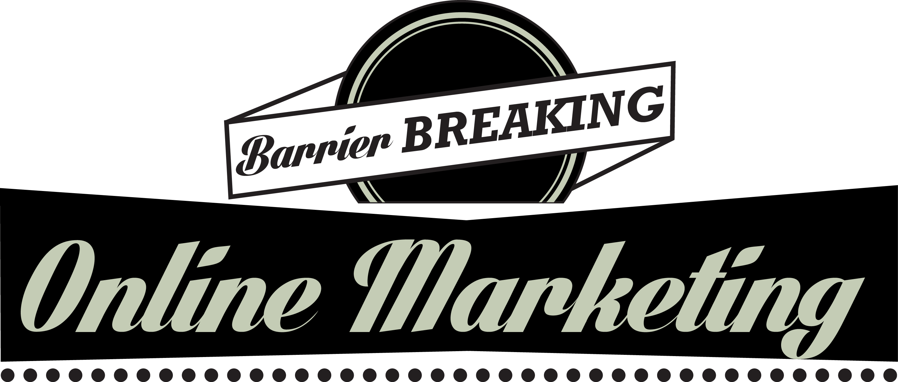

Web DesignDigitalBrandingOnlineMARKETINGSEOSocial MediaMarketingPaidAdvertising
Welcome to SimplyMint, your digital branding parlor.
At SimplyMint we are innovators in the digital sphere.
We pioneer creative strategies and develop effective solutions to create seamless and engaging online experiences.
Through a detailed understanding of your business model, assessment of strategy, and competitive analysis,
we discover your brand’s unique flavor and cultivate your story to create an honest and evocative narrative across
your website and social pages. We identify your audience and create relevant,
highly visible campaigns catered to their specific tastes using SEO, SEM, Social Media Marketing,
and other online marketing techniques. We invite you to step into our parlor, explore our services,
and discover what SimplyMint can do for you.
Your website is the epicenter of your digital presence and the face of your brand.
At SimplyMint, we analyze your target audience’s activity and reaction then integrate our findings into our content and design,
creating visually stunning websites that reflect the personality of your company,
create a connection with the audience, and provide a unique digital experience—all white focusing on encouraging viewer action,
such as submitting a form or making a purchase. Merging vivid photography, exquisite design,
and brilliant copy with seamless user experience, intuitive navigation, and multi-device functionality,
SimplyMint designed websites tell your story and sell your products.

Combining detailed consumer analytics with a visionary brand narrative,
SimplyMint will find and target your customers, creating individual online marketing strategies that include Social Media,
SEO, Email Marketing, Paid Advertising, and Mobile Marketing.
Your brand is the personality of your business.
It is the emotional and psychological relationship you have with your customers.
It’s your story. At SimplyMint, we are master storytellers.
We get to the core of your business and discover what makes you unique and exciting,
and then we spotlight these truths in your branding campaign.
From there, we develop a creative strategy to present an honest, personal, and vibrant narrative to your audience.
Combining striking visual elements with relevant, engaging content,
SimplyMint will take your story from a concept to a reality,
creating a unique and cohesive brand identity across all of your digital channels.
A great story deserves an audience.
Our unique approach to SEO uses a combination of proprietary technologies and
analytical tools to ensure that your sites are prominently ranked and highly visible.
Our Search Engine Optimization services are custom tailored to your brand, allowing for fine tuning based on
behaviors and search patterns that uncover targeting opportunities at the consumer level.
Our leveraged technologies will give you an advantage over relevant critical keywords on all devices and platforms,
making sure that your story is heard.
Social Media is a conversation.
At SimplyMint, we create shareable content,
providing your audience with a deeper insight into your story and
encouraging them to take an active role in telling that story by sharing with their friends.
We gauge your client’s behaviors and responses to the tone of your brand personality and develop targeted campaigns
that focus on strengthening your relationships with your followers and widening your brand reach.
As your brand evolves on Social Media, so do our strategies.
Our custom tools provide detailed reports analyzing the effectiveness of your campaign,
allowing us to refine and improve our techniques to maximize consumer engagement.
Search Engine Marketing focuses your attention on real customers so that you’re there when they need you.
After generating detailed analytical behavior reports,
SimplyMint develops efficient cross-channel paid advertising campaigns that are tightly targeted to an interested
and motivated audience. Utilizing mobile and social media,
we create highly specialized SEM and broadcast your brand to the people who care the most.